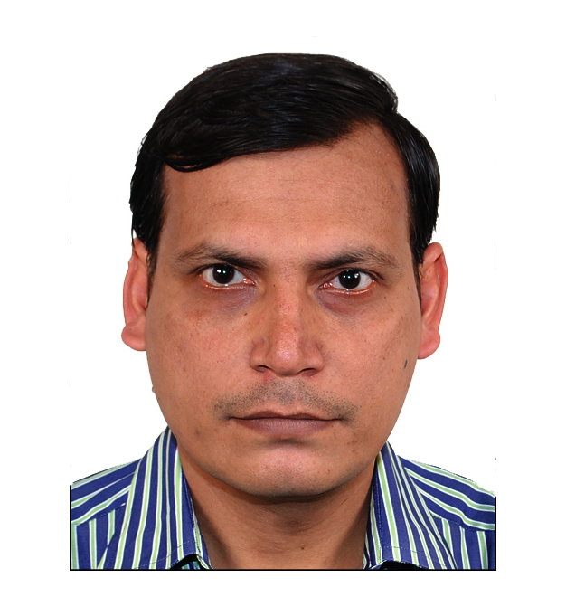

Development Team

Mithilesh Thakur
Lead Technical Systems
Ghanshyam
Lead Technical Systems
Harsh Vardhan Atal
Software Architect

Sourabh Bhardwaj
Software Developer
Kapilakshi Rana
Software Developer
Ambika Tripathi
Software Developer
Vicky
Software Developer
Wasib Tariq
Software Developer
Gourav Sachdeva
Jr. Software Developer
Sidhanshu Monga
Jr. Software Developer
Sudiksha Nagvanshi
Jr. Software Developer

Sunakshi
Jr. Software Developer
Diksha
Jr. Software Developer